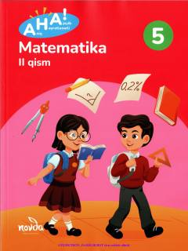

AM5-sinf o'quvchilari uchun mo'ljallangan matematika darsligining ikkinchi qismi.
Mazkur darslik umumiy o'rta ta'lim maktablarining 5-sinf o'quvchilari uchun mo'ljallangan bo'lib, matematika fanini zamonaviy pedagogik yondashuvlar asosida o'rgatadi. Kitobda turli amaliy mashqlar, mantiqiy fikrlashni rivojlantiruvchi topshiriqlar va kundalik hayot bilan bog'liq misollar keltirilgan.